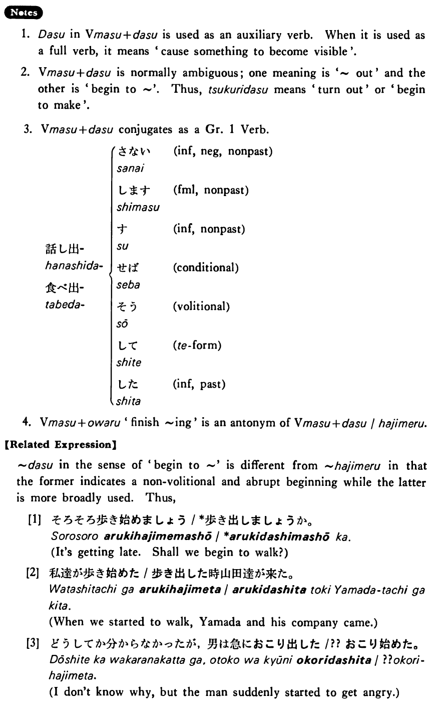

出す・だす (B. 102)
- (ks).
- 車が動き出した・出しました。
- The car started to move.
- (a).
- 急に雨が降り出した。
- Suddenly it began to rain.
- (b).
- 一歳になって初めて歩き出した。
- He started to walk only after he became a year old.
- (c).
- そのアイディアは誰が考え出したんですか。
- Who thought out that idea?
- (d).
- 一時間ぐらいかけてとうとうその本屋を探し出した。
- After spending about an hour, I finally located that bookstore.
